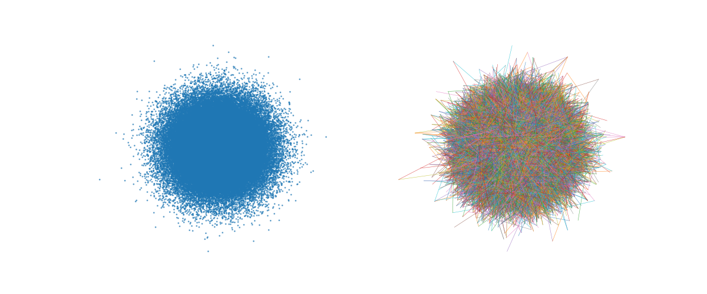

Precision annoy.AnnoyIndex with examples#
An example showing the AnnoyIndex class.
from __future__ import print_function
import random; random.seed(0)
import time
# from annoy import AnnoyIndex
# from scikitplot.annoy import AnnoyIndex
from scikitplot.annoy import Index as AnnoyIndex
try:
from tqdm.auto import tqdm, trange
except ImportError:
# Fallback: dummy versions that ignore all args/kwargs
tqdm = lambda iterable, *args, **kwargs: iterable
trange = lambda n, *args, **kwargs: range(n)
n, f = 1_000_000, 100 # 100~2.5GB
n, f = 100_000, 100 # 100~0.25GB 256~0.6GB
idx = AnnoyIndex(
f=f,
metric='angular',
)
idx.set_seed(0)
for i in trange(n):
if(i % (n//10) == 0): print(f"{i} / {n} = {1.0 * i / n}")
# v = []
# for z in range(f):
# v.append(random.gauss(0, 1))
v = [random.gauss(0, 1) for _ in range(f)]
idx.add_item(i, v)
idx.build(2 * f)
idx.save('test.annoy')
idx.info()
/home/circleci/repo/galleries/examples/annoy/plot_precision_script.py:37: UserWarning:
seed=0 resets to Annoy's default seed
0%| | 0/100000 [00:00<?, ?it/s]0 / 100000 = 0.0
1%| | 640/100000 [00:00<00:15, 6395.77it/s]
1%|▏ | 1290/100000 [00:00<00:15, 6455.65it/s]
2%|▏ | 1936/100000 [00:00<00:15, 6285.81it/s]
3%|▎ | 2566/100000 [00:00<00:16, 5830.26it/s]
3%|▎ | 3154/100000 [00:00<00:20, 4632.73it/s]
4%|▎ | 3650/100000 [00:00<00:20, 4616.63it/s]
4%|▍ | 4164/100000 [00:00<00:20, 4761.19it/s]
5%|▍ | 4657/100000 [00:00<00:20, 4705.80it/s]
5%|▌ | 5204/100000 [00:01<00:19, 4922.95it/s]
6%|▌ | 5706/100000 [00:01<00:23, 4087.74it/s]
6%|▌ | 6143/100000 [00:01<00:22, 4107.07it/s]
7%|▋ | 6666/100000 [00:01<00:21, 4403.28it/s]
7%|▋ | 7152/100000 [00:01<00:20, 4527.84it/s]
8%|▊ | 7677/100000 [00:01<00:19, 4730.69it/s]
8%|▊ | 8240/100000 [00:01<00:18, 4988.27it/s]
9%|▊ | 8749/100000 [00:01<00:19, 4732.85it/s]
9%|▉ | 9231/100000 [00:01<00:23, 3895.72it/s]
10%|▉ | 9662/100000 [00:02<00:22, 3997.26it/s]10000 / 100000 = 0.1
10%|█ | 10325/100000 [00:02<00:19, 4684.13it/s]
11%|█ | 10820/100000 [00:02<00:18, 4728.07it/s]
11%|█▏ | 11318/100000 [00:02<00:18, 4797.33it/s]
12%|█▏ | 11812/100000 [00:02<00:18, 4762.22it/s]
12%|█▏ | 12298/100000 [00:02<00:19, 4584.54it/s]
13%|█▎ | 12764/100000 [00:02<00:19, 4584.98it/s]
13%|█▎ | 13228/100000 [00:02<00:19, 4555.38it/s]
14%|█▎ | 13734/100000 [00:02<00:21, 4018.10it/s]
14%|█▍ | 14151/100000 [00:03<00:21, 4049.54it/s]
15%|█▍ | 14567/100000 [00:03<00:21, 4003.83it/s]
15%|█▌ | 15156/100000 [00:03<00:18, 4521.60it/s]
16%|█▌ | 15619/100000 [00:03<00:19, 4435.41it/s]
16%|█▌ | 16070/100000 [00:03<00:18, 4428.59it/s]
17%|█▋ | 16518/100000 [00:03<00:19, 4320.14it/s]
17%|█▋ | 16954/100000 [00:03<00:23, 3512.96it/s]
17%|█▋ | 17373/100000 [00:03<00:22, 3680.06it/s]
18%|█▊ | 17763/100000 [00:04<00:22, 3667.26it/s]
18%|█▊ | 18203/100000 [00:04<00:21, 3863.58it/s]
19%|█▊ | 18603/100000 [00:04<00:20, 3897.77it/s]
19%|█▉ | 19013/100000 [00:04<00:20, 3954.98it/s]
19%|█▉ | 19451/100000 [00:04<00:19, 4077.09it/s]
20%|█▉ | 19867/100000 [00:04<00:19, 4100.87it/s]20000 / 100000 = 0.2
20%|██ | 20281/100000 [00:04<00:19, 4032.93it/s]
21%|██ | 20688/100000 [00:04<00:20, 3957.29it/s]
22%|██▏ | 21600/100000 [00:04<00:14, 5451.74it/s]
22%|██▏ | 22152/100000 [00:04<00:17, 4494.41it/s]
23%|██▎ | 22634/100000 [00:05<00:17, 4505.87it/s]
23%|██▎ | 23108/100000 [00:05<00:17, 4359.99it/s]
24%|██▎ | 23560/100000 [00:05<00:21, 3616.69it/s]
24%|██▍ | 23951/100000 [00:05<00:21, 3615.88it/s]
24%|██▍ | 24420/100000 [00:05<00:19, 3883.62it/s]
25%|██▌ | 25098/100000 [00:05<00:16, 4644.26it/s]
26%|██▌ | 25784/100000 [00:05<00:14, 5248.58it/s]
26%|██▋ | 26345/100000 [00:05<00:13, 5349.74it/s]
27%|██▋ | 26897/100000 [00:06<00:13, 5290.13it/s]
28%|██▊ | 28358/100000 [00:06<00:09, 7954.56it/s]
30%|██▉ | 29604/100000 [00:06<00:07, 9260.48it/s]30000 / 100000 = 0.3
31%|███ | 31183/100000 [00:06<00:06, 11172.98it/s]
32%|███▏ | 32319/100000 [00:06<00:07, 8814.31it/s]
33%|███▎ | 33291/100000 [00:06<00:09, 7102.09it/s]
34%|███▍ | 34111/100000 [00:06<00:10, 6191.96it/s]
35%|███▍ | 34818/100000 [00:07<00:10, 6250.14it/s]
36%|███▌ | 35506/100000 [00:07<00:10, 6184.80it/s]
36%|███▌ | 36168/100000 [00:07<00:12, 5266.79it/s]
37%|███▋ | 36741/100000 [00:07<00:14, 4504.59it/s]
37%|███▋ | 37234/100000 [00:07<00:13, 4513.39it/s]
38%|███▊ | 37779/100000 [00:07<00:13, 4726.22it/s]
38%|███▊ | 38372/100000 [00:07<00:12, 5021.15it/s]
39%|███▉ | 38974/100000 [00:07<00:11, 5280.12it/s]
40%|███▉ | 39525/100000 [00:08<00:11, 5299.41it/s]40000 / 100000 = 0.4
40%|████ | 40071/100000 [00:08<00:11, 5160.38it/s]
41%|████ | 40599/100000 [00:08<00:13, 4372.54it/s]
41%|████▏ | 41279/100000 [00:08<00:11, 4977.78it/s]
42%|████▏ | 41808/100000 [00:08<00:12, 4827.10it/s]
42%|████▏ | 42354/100000 [00:08<00:11, 4993.54it/s]
43%|████▎ | 42871/100000 [00:08<00:11, 4925.79it/s]
43%|████▎ | 43376/100000 [00:08<00:11, 4861.64it/s]
44%|████▍ | 44019/100000 [00:08<00:10, 5299.04it/s]
45%|████▍ | 44558/100000 [00:09<00:10, 5205.34it/s]
45%|████▌ | 45085/100000 [00:09<00:11, 4960.17it/s]
46%|████▌ | 45587/100000 [00:09<00:12, 4512.79it/s]
46%|████▌ | 46049/100000 [00:09<00:12, 4359.04it/s]
46%|████▋ | 46492/100000 [00:09<00:12, 4275.41it/s]
47%|████▋ | 46924/100000 [00:09<00:12, 4222.73it/s]
47%|████▋ | 47349/100000 [00:09<00:12, 4153.88it/s]
48%|████▊ | 47766/100000 [00:09<00:15, 3429.57it/s]
48%|████▊ | 48372/100000 [00:09<00:12, 4080.59it/s]
49%|████▉ | 48808/100000 [00:10<00:12, 4026.66it/s]
49%|████▉ | 49278/100000 [00:10<00:12, 4204.64it/s]
50%|████▉ | 49715/100000 [00:10<00:12, 4120.10it/s]50000 / 100000 = 0.5
50%|█████ | 50138/100000 [00:10<00:14, 3511.66it/s]
51%|█████ | 50666/100000 [00:10<00:12, 3953.45it/s]
51%|█████ | 51092/100000 [00:10<00:12, 4033.52it/s]
52%|█████▏ | 51555/100000 [00:10<00:11, 4196.07it/s]
52%|█████▏ | 52076/100000 [00:10<00:10, 4480.54it/s]
53%|█████▎ | 53133/100000 [00:10<00:07, 6222.93it/s]
54%|█████▍ | 53772/100000 [00:11<00:07, 5892.01it/s]
54%|█████▍ | 54397/100000 [00:11<00:07, 5992.08it/s]
55%|█████▌ | 55109/100000 [00:11<00:07, 6314.45it/s]
56%|█████▌ | 55750/100000 [00:11<00:08, 4980.04it/s]
56%|█████▋ | 56298/100000 [00:11<00:08, 4894.27it/s]
57%|█████▋ | 56822/100000 [00:11<00:10, 4155.41it/s]
57%|█████▋ | 57277/100000 [00:11<00:10, 4207.72it/s]
58%|█████▊ | 57727/100000 [00:12<00:10, 4198.07it/s]
58%|█████▊ | 58167/100000 [00:12<00:10, 4144.76it/s]
59%|█████▊ | 58595/100000 [00:12<00:11, 3518.58it/s]
59%|█████▉ | 59001/100000 [00:12<00:11, 3648.61it/s]
59%|█████▉ | 59385/100000 [00:12<00:11, 3674.83it/s]
60%|█████▉ | 59767/100000 [00:12<00:10, 3671.27it/s]60000 / 100000 = 0.6
60%|██████ | 60144/100000 [00:12<00:10, 3655.96it/s]
61%|██████ | 60517/100000 [00:12<00:10, 3632.37it/s]
61%|██████ | 60930/100000 [00:12<00:10, 3772.61it/s]
61%|██████▏ | 61429/100000 [00:13<00:09, 4121.20it/s]
62%|██████▏ | 61846/100000 [00:13<00:09, 4030.38it/s]
63%|██████▎ | 63042/100000 [00:13<00:05, 6315.04it/s]
64%|██████▎ | 63685/100000 [00:13<00:07, 5079.71it/s]
64%|██████▍ | 64239/100000 [00:13<00:06, 5188.19it/s]
65%|██████▍ | 64793/100000 [00:13<00:08, 4360.31it/s]
65%|██████▌ | 65273/100000 [00:13<00:08, 4276.50it/s]
66%|██████▌ | 65731/100000 [00:13<00:08, 4192.65it/s]
66%|██████▋ | 66385/100000 [00:14<00:07, 4783.69it/s]
67%|██████▋ | 66889/100000 [00:14<00:06, 4748.94it/s]
67%|██████▋ | 67382/100000 [00:14<00:06, 4717.75it/s]
68%|██████▊ | 68069/100000 [00:14<00:06, 5309.09it/s]
69%|██████▉ | 69120/100000 [00:14<00:04, 6776.00it/s]70000 / 100000 = 0.7
70%|███████ | 70454/100000 [00:14<00:03, 7408.10it/s]
71%|███████ | 71194/100000 [00:14<00:04, 7076.13it/s]
72%|███████▏ | 71900/100000 [00:14<00:04, 6970.13it/s]
73%|███████▎ | 72595/100000 [00:14<00:04, 6634.12it/s]
73%|███████▎ | 73258/100000 [00:15<00:04, 5678.50it/s]
74%|███████▍ | 73844/100000 [00:15<00:04, 5646.64it/s]
74%|███████▍ | 74421/100000 [00:15<00:04, 5378.70it/s]
75%|███████▍ | 74968/100000 [00:15<00:05, 4369.45it/s]
75%|███████▌ | 75437/100000 [00:15<00:06, 3744.62it/s]
76%|███████▌ | 76056/100000 [00:15<00:05, 4275.19it/s]
77%|███████▋ | 76792/100000 [00:15<00:04, 5003.76it/s]
77%|███████▋ | 77342/100000 [00:16<00:04, 4835.77it/s]
78%|███████▊ | 77860/100000 [00:16<00:05, 4062.82it/s]
78%|███████▊ | 78307/100000 [00:16<00:05, 4065.54it/s]
79%|███████▉ | 78810/100000 [00:16<00:04, 4299.90it/s]
79%|███████▉ | 79266/100000 [00:16<00:05, 3621.72it/s]
80%|███████▉ | 79661/100000 [00:16<00:05, 3635.79it/s]80000 / 100000 = 0.8
80%|████████ | 80048/100000 [00:16<00:05, 3681.25it/s]
80%|████████ | 80434/100000 [00:16<00:05, 3642.14it/s]
81%|████████ | 80810/100000 [00:17<00:05, 3660.15it/s]
81%|████████▏ | 81320/100000 [00:17<00:04, 4055.55it/s]
82%|████████▏ | 81847/100000 [00:17<00:04, 4396.88it/s]
82%|████████▏ | 82443/100000 [00:17<00:03, 4845.66it/s]
83%|████████▎ | 82936/100000 [00:17<00:03, 4649.35it/s]
84%|████████▎ | 83519/100000 [00:17<00:03, 4983.87it/s]
84%|████████▍ | 84085/100000 [00:17<00:03, 5177.79it/s]
85%|████████▍ | 84652/100000 [00:17<00:02, 5320.98it/s]
85%|████████▌ | 85217/100000 [00:17<00:02, 5416.99it/s]
86%|████████▌ | 85762/100000 [00:18<00:03, 4463.99it/s]
86%|████████▌ | 86238/100000 [00:18<00:03, 4509.46it/s]
87%|████████▋ | 86711/100000 [00:18<00:03, 4390.44it/s]
87%|████████▋ | 87220/100000 [00:18<00:02, 4578.16it/s]
88%|████████▊ | 87691/100000 [00:18<00:03, 3831.96it/s]
88%|████████▊ | 88261/100000 [00:18<00:02, 4294.57it/s]
89%|████████▉ | 88793/100000 [00:18<00:02, 4562.43it/s]
89%|████████▉ | 89371/100000 [00:18<00:02, 4892.45it/s]90000 / 100000 = 0.9
90%|█████████ | 90093/100000 [00:18<00:01, 5542.98it/s]
91%|█████████ | 90667/100000 [00:19<00:01, 5502.13it/s]
91%|█████████ | 91231/100000 [00:19<00:01, 5251.19it/s]
92%|█████████▏| 91768/100000 [00:19<00:01, 4358.31it/s]
92%|█████████▏| 92235/100000 [00:19<00:01, 4319.72it/s]
93%|█████████▎| 92689/100000 [00:19<00:01, 4249.63it/s]
93%|█████████▎| 93129/100000 [00:19<00:01, 4265.54it/s]
94%|█████████▎| 93709/100000 [00:19<00:01, 4681.44it/s]
94%|█████████▍| 94189/100000 [00:19<00:01, 3887.07it/s]
95%|█████████▍| 94737/100000 [00:19<00:01, 4281.10it/s]
95%|█████████▌| 95194/100000 [00:20<00:01, 4158.11it/s]
96%|█████████▌| 95630/100000 [00:20<00:01, 4096.70it/s]
96%|█████████▌| 96054/100000 [00:20<00:01, 3483.81it/s]
97%|█████████▋| 96623/100000 [00:20<00:00, 4020.26it/s]
97%|█████████▋| 97054/100000 [00:20<00:00, 4042.69it/s]
97%|█████████▋| 97479/100000 [00:20<00:00, 4067.26it/s]
98%|█████████▊| 98037/100000 [00:20<00:00, 4481.85it/s]
98%|█████████▊| 98500/100000 [00:20<00:00, 4404.99it/s]
99%|█████████▉| 98951/100000 [00:21<00:00, 4344.86it/s]
100%|██████████| 100000/100000 [00:21<00:00, 4736.26it/s]
{'f': 100, 'metric': 'angular', 'n_neighbors': 5, 'on_disk_path': 'test.annoy', 'prefault': False, 'seed': None, 'verbose': None, 'schema_version': 0, 'n_items': 100000, 'n_trees': 200, 'memory_usage_byte': 270573580, 'memory_usage_mib': 258.0390739440918}
def plot(idx, y=None, **kwargs):
import numpy as np
import matplotlib.pyplot as plt
import scikitplot.cexternals._annoy._plotting as utils
single = np.zeros(idx.get_n_items(), dtype=int)
if y is None:
double = np.random.uniform(0, 1, idx.get_n_items()).round()
# single vs double
fig, ax = plt.subplots(ncols=2, figsize=(12, 5))
alpha = kwargs.pop("alpha", 0.8)
y2 = utils.plot_annoy_index(
idx,
dims = list(range(idx.f)),
plot_kwargs={"draw_legend": False},
ax=ax[0],
)[0]
utils.plot_annoy_knn_edges(
idx,
y2,
k=1,
line_kwargs={"alpha": alpha},
ax=ax[1],
)
# idx.unbuild()
# idx.build(10)
plot(idx)

def precision(q):
limits = [10, 100, 1_000, 10_000]
k = 10
prec_n = 10
prec_sum = {}
time_sum = {}
for i in trange(prec_n):
j = random.randrange(0, n)
closest = set(q.get_nns_by_item(j, k, n))
for limit in limits:
t0 = time.time()
toplist = q.get_nns_by_item(j, k, limit)
T = time.time() - t0
found = len(closest.intersection(toplist))
hitrate = 1.0 * found / k
prec_sum[limit] = prec_sum.get(limit, 0.0) + hitrate
time_sum[limit] = time_sum.get(limit, 0.0) + T
for limit in limits:
print('limit: %-9d precision: %6.2f%% avg time: %.6fs'
% (limit, 100.0 * prec_sum[limit] / (i + 1), time_sum[limit] / (i + 1)))
q = AnnoyIndex(f, 'angular')
q.set_seed(0)
q.load('test.annoy')
precision(q)
/home/circleci/repo/galleries/examples/annoy/plot_precision_script.py:111: UserWarning:
seed=0 resets to Annoy's default seed
0%| | 0/10 [00:00<?, ?it/s]
60%|██████ | 6/10 [00:00<00:00, 54.36it/s]
100%|██████████| 10/10 [00:00<00:00, 52.68it/s]
limit: 10 precision: 13.00% avg time: 0.000191s
limit: 100 precision: 16.00% avg time: 0.000148s
limit: 1000 precision: 25.00% avg time: 0.000487s
limit: 10000 precision: 82.00% avg time: 0.002854s
Total running time of the script: (3 minutes 5.114 seconds)
Related examples